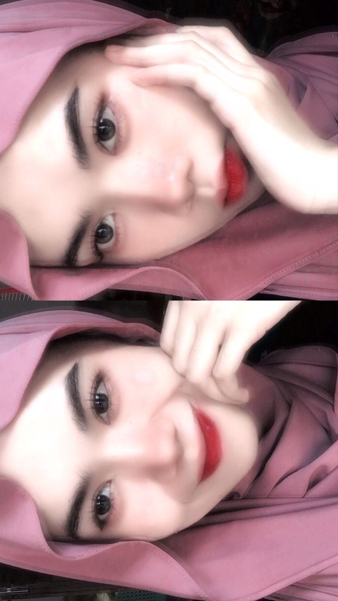

üéÇ Baiq Ila Karunia ‚Äî Climb Edition
Naik sampai puncak untuk melihat ucapan ulang tahunnya!
Mulai Game
Naik sampai puncak!
Kumpulkan semua koin dulu!
Controls: ← → untuk bergerak • Spasi/↑ untuk lompat
üéâ Selamat Ulang Tahun üéâ
Baiq Ila Karunia
Semoga selalu sehat, sukses, dan bahagia ya! üíñ
